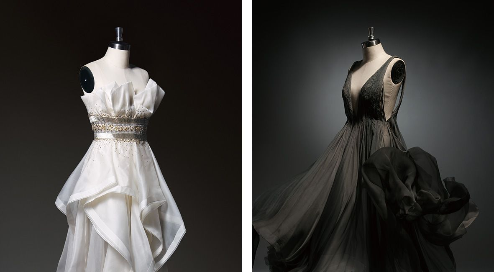

歌中歌2017年冬季新品发布会于2017年6月6日正式拉开帷幕。此次冬季延续整年度“丝路”灵感，并在国境之外的波斯寻找最触动人心的美好。近三千年的历史让这里的文化、艺术华丽绽放，流光溢彩的伊斯兰建筑、活色生香的集市生活、馥郁芬芳的鲜花王国……这个冬季，易菲将在波斯集市撷取异域色彩，以此解读女性如彩虹般五彩斑斓的内心世界。
从流行趋势发布区域不难看出，歌中歌此次在色彩运用上更加大胆，丰富的印花面料、精致的特色工艺、时尚的廓型……易菲敏锐捕捉最新的前沿创意元素，致力于让都市女性领略更加纯粹的时尚设计思潮，帮助她们展现自身独有的当代摩登精神。
从流行趋势发布区域不难看出，歌中歌此次在色彩运用上更加大胆，丰富的印花面料、精致的特色工艺、时尚的廓型……易菲敏锐捕捉最新的前沿创意元素，致力于让都市女性领略更加纯粹的时尚设计思潮，帮助她们展现自身独有的当代摩登精神。
本季歌中歌Y线将研发重点放在了面料上，灵感多源于波斯，并利用条绒、丝绒印花等元素表现70年代复古混搭风的回归，格形大方的棉色织格及色芯纱的使用带来浓厚的异域风情，更加入各类毛边工艺及面里撞色的手法以体现新中性风与实用主义的糅合。
五彩斑斓的色彩世界是F线本季表达的重点，其灵感来源于波斯集市上如彩虹般绚丽的异域色彩，波斯细密画、星月图文、建筑细节的纹样同样被运用到本季服饰上，从而更好地表达异域风情与新都市运动风的结合；此外，更运用绣花、珠片绣、闪金的印花效果为细节点缀，进而诠释女性色彩斑斓的内心世界。
T线除了延续以往的花卉面料（如复古玫瑰、剪影花卉等）来表现女性的柔美；本季服饰的研发更运用了富有异域风情的蕾丝工艺，水溶蕾丝、复合蕾丝、通透蕾丝的加入为冬季女性造型带来点睛的效果，除了大胆表现波斯文化，更传达出复古风潮及新都市态度。
歌中歌冬季新品发布会完美落幕，大获好评。融合了休闲与精致、趣味与艺术的新品设计，一展都市女性的百变形象与温柔张力，同时也寄予了品牌“生活如花，自然快乐”的生活态度，以极富感染力的积极状态，笑迎每一刻的精彩，装点缤纷多彩的生活。
未来，歌中歌仍将继续追寻时尚的脚步，坚持对设计、对创新事物、对原创细节的孜孜追求，将更多新鲜的时尚因子注入每一个女性的现代生活方式中。
